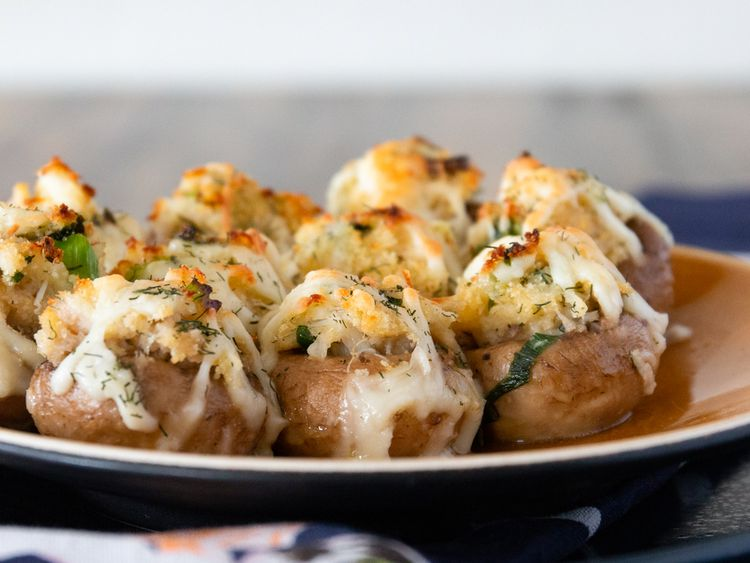

This is Stuffed Mushroom Recipe page

Recipe description
Ingridients
- 2 tablespoons butter
-
2 tablespoons minced green onion
-
1 cup cooked crabmeat, finely chopped
-
½ cup dry bread crumbs
-
¼ cup shredded Monterey Jack cheese
-
1 egg, beaten
-
1 teaspoon lemon juice
-
½ teaspoon dried dill weed
-
½ cup butter, melted
-
1 ½ pounds fresh button mushrooms, stems removed
-
½ cup shredded Monterey Jack cheese
-
¼ cup dry white wine
Direction
-
- STEP 1

- Gather all ingredients and preheat the oven to 400 degrees F (200 degrees C).
-
- STEP 2
- Melt 2 tablespoons butter in a skillet; cook and stir green onion until softened, about 2 minutes.
Transfer green onion to a bowl. Stir in crabmeat, bread crumbs, 1/4 cup Monterey Jack cheese, egg,
lemon juice, and dill weed until well mixed.
Back